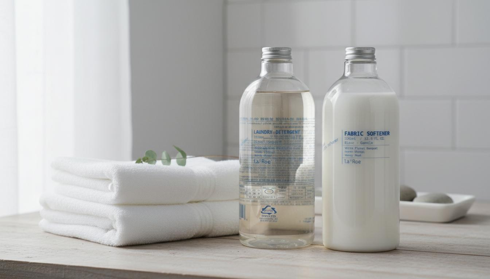
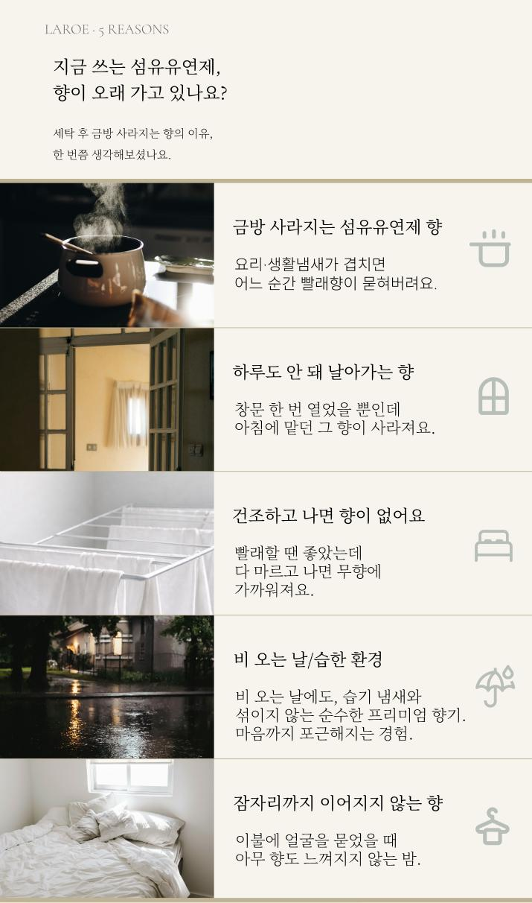

LAROE Premier Blanc
무향은 부족하고 진한 향은 부담스러운 당신을 위한,
라로에 프리미엄 블랑향
The Question
강한 향료로 악취 덮는 마스킹 방식
금방 날아가는 가벼운 향 지속력
향과 땀 냄새가 섞여 만드는 불쾌함
Point 01 — Fragrance
냄새를 덮지 않고 '비워낸' 자리에 채우는 향
Top Note
Green Floral
White Rose, Pink Pepper
Middle Note
White Floral Bouquet
Violet, Neroli, Peony
Base Note
Woody Musk
Sandalwood, White Musk
Technology
옥수수 전분 성분의 도넛 구조가 냄새 분자를 포집한 뒤,
그 위에 블랑향을 레이어링합니다.
Step 01
악취 분자
Step 02
도넛 구조로 포집
Step 03
블랑향 레이어링
"탈취가 먼저, 향은 그 다음. 섞이지 않는 순수한 잔향."
Point 02 — Softening
부드러움과 흡수력의 완벽한 밸런스
pH Scale
세탁 후 남은 알칼리 성분을 중화하여 거칠어진 섬유 결을 부드럽게 정돈합니다.
BEFORE — 안 좋은 향
AFTER — 좋은 향
Point 03 — Mildness
부드러운 사용감을 고려한 성분 설계
Vegan
동물성 원료 배제
Natural
포트마리골드 · 녹차
Light
피부 저자극
비건 인증 원료 & 동물성 원료 배제
식물 유래 추출물 (포트마리골드, 녹차) 함유
포트마리골드꽃추출물 50mg/kg (50ppm), 녹차추출물 50mg/kg (50ppm)
피부에 더 편안한 약산성 유연제
Candid. Minimal. Sustainable.
How to use
라로에 세탁세제와 함께 사용 시
블랑향의 지속력이 더욱 배가됩니다.


FAQ
Disclosure
| 품목 | 섬유유연제 |
| 제품명 | 라로에 프리미엄 블랑향 아기 섬유유연제 |
| 용도 | 섬유용 |
| 제형 | 액체형 |
| 액성 | 원액(약산성) |
| 용량 | 1L |
| 제조연월 | 별도표기 |
| 유통기한 | 제조일로부터 24개월 |
| 신고번호 | CB24-05-0018 |
| 제조국 | 대한민국 |
| 제조자 주소 연락처 | 주식회사 제이엔케이코스 / 경상북도 칠곡군 약목면 복성20길 72-8, 에이동 / 070-4757-8399 |
| 판매자 주소 연락처 | 라로에 laroe / 경기도 의왕시 백운호수로5길 15, 1층상가 104호(학의동) / 070-8287-2006 |
사용 물질 및 성분명
| 주요물질 | 다이하이드로제네이티드탈로우아미도에틸하이드록시에틸모늄메토설페이트, 정제수 |
| 보존제 | 벤조산 나트륨 |
| 알레르기물질 | 알파-이소메칠이오논 |
| 계면활성제 | D-글루코피라노스, 올리고, 데실 옥틸 글리코사이드(비이온계), α-도데실-ω-하이드록시-폴리(옥시-1,2-에탄디일)(비이온계), 다이하이드로제네이티드탈로우아미도에틸하이드록시에틸모늄메토설페이트(양이온계) |
| 기타물질 | 1,3,4,6,7,8-헥사하이드로-4,6,6,7,8,8-헥사메틸사이클로펜타[g]-2-벤조피란, 리모넨 |
표준사용량
일반세탁기(90L이상 45ml, 45~90L 30ml, 45L이하 15ml) / 드럼세탁기(5kg이상 45ml, 3~5kg 30ml, 3kg이하 15ml)
사용방법
세탁물량에 따라 권장사용량에 맞게 섬유유연제를 세탁기에 넣으십시오.
사용상 주의사항
응급처치